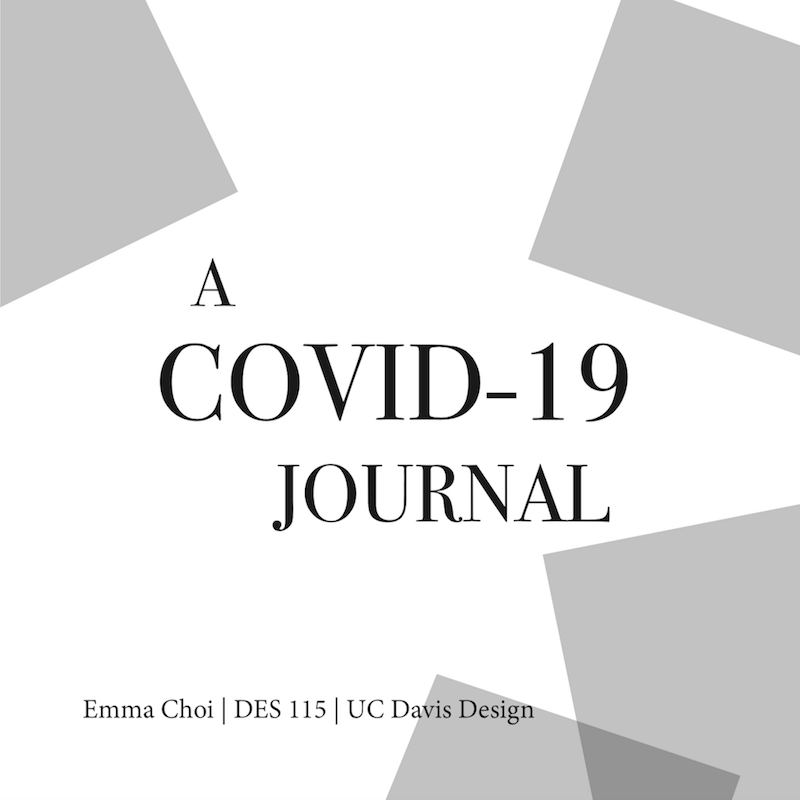

covid journal
This project was my final work for a typography class I took, representing my routine under COVID-19 times. The visual theme of this booklet was relatively simple and somewhat abstract. I kept the typography and decorations in black-and-white, with the only color coming from photos. I kept the typography to two fonts, one serif (Bodoni) and one sans serif (Frutiger).
Adobe InDesign; June 2020